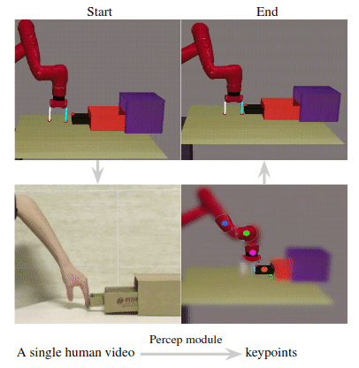
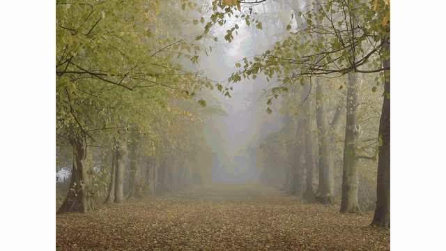
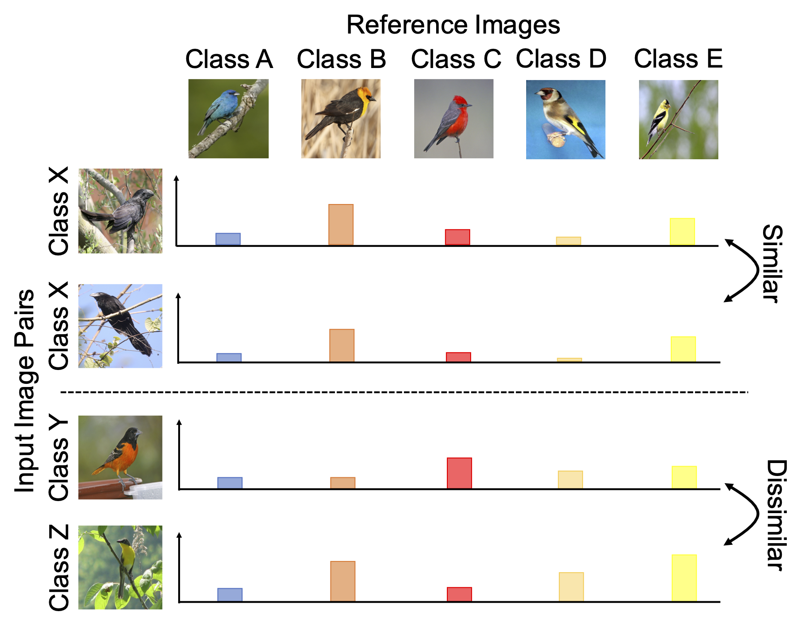
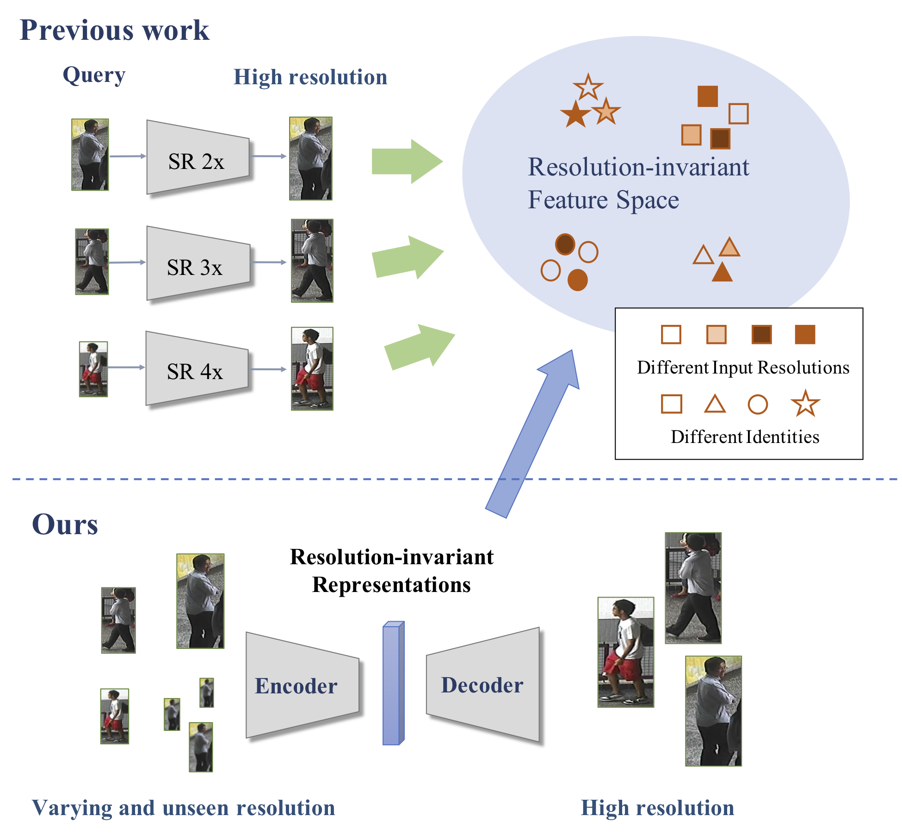
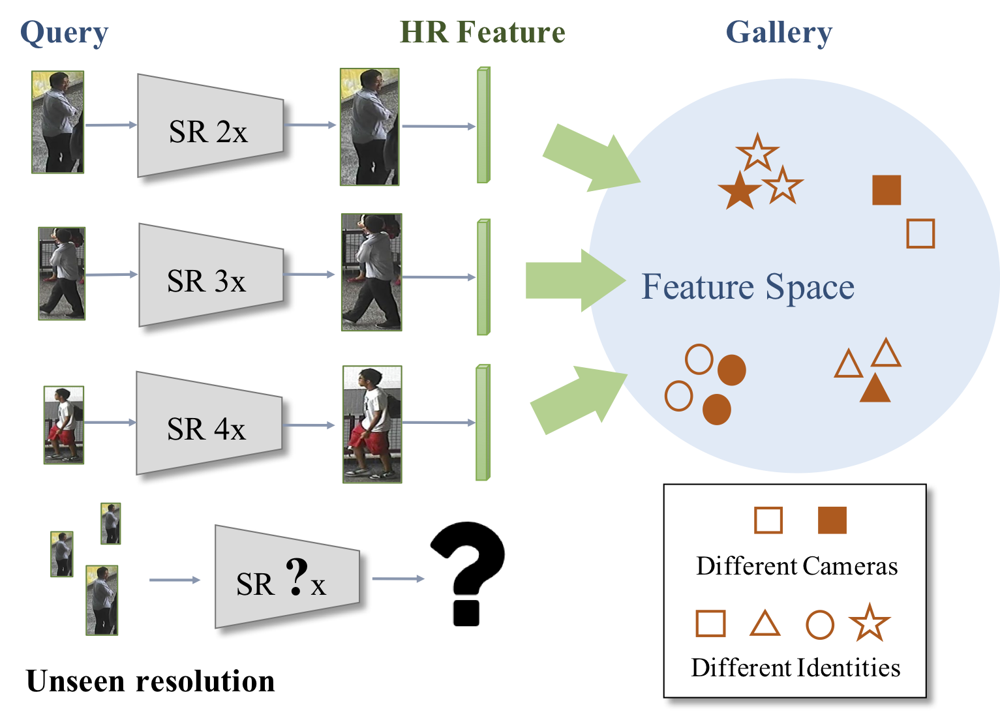
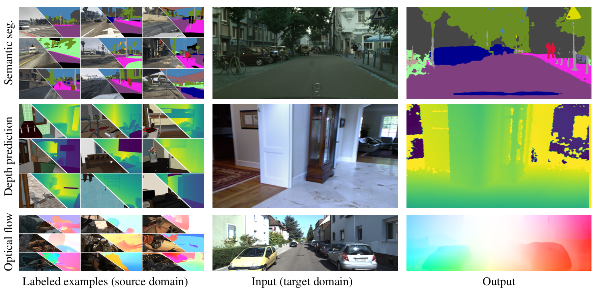
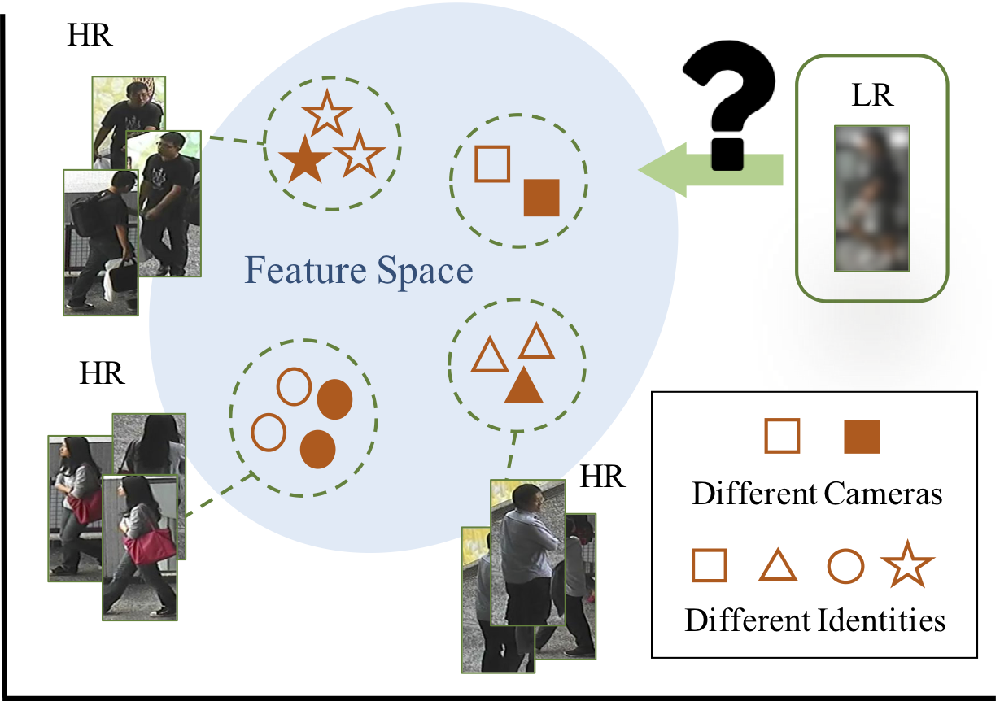
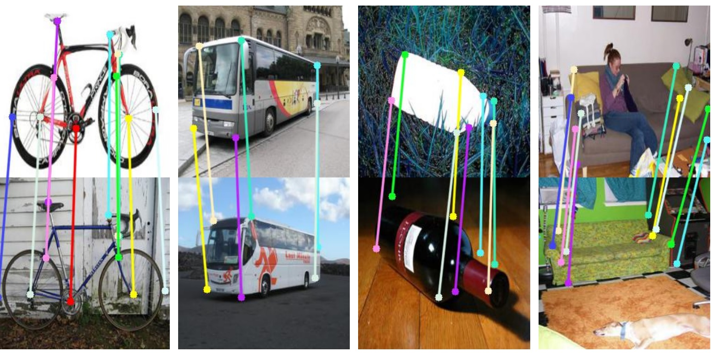

Selected Publications
Neural Shape Mating: Self-Supervised Object Assembly with Adversarial Shape Priors
IEEE Conference on Computer Vision and Pattern Recognition (CVPR), 2022
[Paper]
[Project page]

Learning by Watching: Physical Imitation of Manipulation Skills from Human Videos
IEEE/RSJ International Conference on Intelligent Robots and Systems (IROS), 2021
RSS Workshop on Visual Learning and Reasoning for Robotics, 2021
ICML Workshop on Human in the Loop Learning, 2021
[Paper]
[Project page]
[Video]

Show, Match and Segment: Joint Weakly Supervised Learning of Semantic Matching and Object Co-segmentation
IEEE Transactions on Pattern Analysis and Machine Intelligence (PAMI), 2021
[Paper]
[Project page]
[Code]
[Slides]

Self-Attentive 3D Human Pose and Shape Estimation from Videos
Computer Vision and Image Understanding (CVIU), 2021
[Paper]

NAS-DIP: Learning Deep Image Prior with Neural Architecture Search
European Conference on Computer Vision (ECCV), 2020
[Paper]
[Project page]
[GitHub]
[Colab]
[Highlight video]
[Highlight slides]
[Full video]
[Full slides]

Learning to Learn in a Semi-Supervised Fashion
European Conference on Computer Vision (ECCV), 2020
[Paper]

Cross-Resolution Adversarial Dual Network for Person Re-Identification and Beyond
arXiv preprint arXiv:2002.09274
[Paper]


CrDoCo: Pixel-level Domain Transfer with Cross-Domain Consistency
IEEE Conference on Computer Vision and Pattern Recognition (CVPR), 2019
[Paper]
[Project Page]
[Code]
[Slides]
[Poster]


Deep Semantic Matching with Foreground Detection and Cycle-Consistency
Asian Conference on Computer Vision (ACCV), 2018
[Paper]
[Project Page]
[Code]
[Poster]